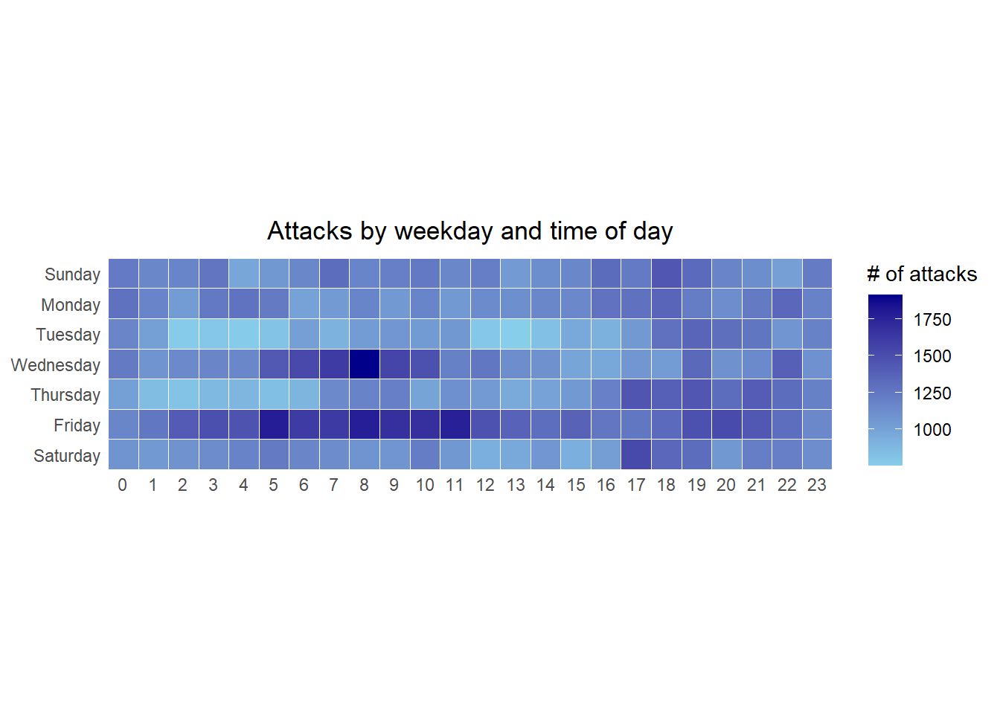
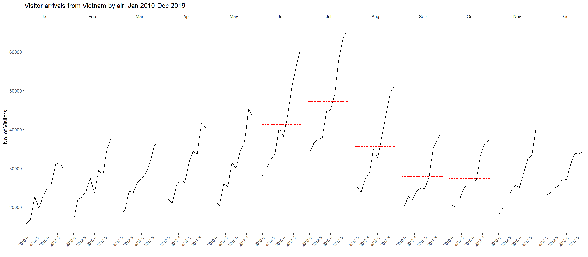
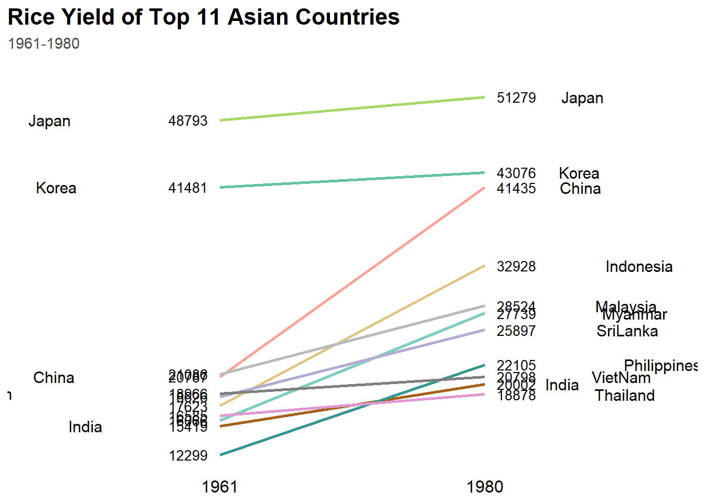

pacman::p_load(scales, viridis, ggthemes,tidyverse,
gridExtra, readxl, knitr, data.table, ggHoriPlot,tidyr)Hands-on_Ex08
Visualising and Analysing Time-oriented Data
Setup
Plot Calender Heatmap
For the purpose of this hands-on exercise, eventlog.csv file will be used. This data file consists of 199,999 rows of time-series cyber attack records by country.
attacks <- read_csv("data/eventlog.csv")Examining data structure
Lets have a look at the imported data!
kable(head(attacks))| timestamp | source_country | tz |
|---|---|---|
| 2015-03-12 15:59:16 | CN | Asia/Shanghai |
| 2015-03-12 16:00:48 | FR | Europe/Paris |
| 2015-03-12 16:02:26 | CN | Asia/Shanghai |
| 2015-03-12 16:02:38 | US | America/Chicago |
| 2015-03-12 16:03:22 | CN | Asia/Shanghai |
| 2015-03-12 16:03:45 | CN | Asia/Shanghai |
There are three columns, namely timestamp, source_country and tz.
timestamp field stores date-time values in POSIXct format.
source_country field stores the source of the attack. It is in ISO 3166-1 alpha-2 country code.
tz field stores time zone of the source IP address.
Data Preparation
Step 1: Deriving weekday and hour of day fields
Before we can plot the calender heatmap, two new fields namely wkday and hour need to be derived. In this step, we will write a function to perform the task.
make_hr_wkday <- function(ts, sc, tz) {
real_times <- ymd_hms(ts,
tz = tz[1],
quiet = TRUE)
dt <- data.table(source_country = sc,
wkday = weekdays(real_times),
hour = hour(real_times))
return(dt)
}
NoteNote
yml_hms()andhour()are from lubridate package, andweekdays()is a base R function.
Step 2: Deriving the attacks tibble data frame
wkday_levels <- c('Saturday', 'Friday',
'Thursday', 'Wednesday',
'Tuesday', 'Monday',
'Sunday')
attacks <- attacks %>%
group_by(tz) %>%
do(make_hr_wkday(.$timestamp,
.$source_country,
.$tz)) %>%
ungroup() %>%
mutate(wkday = factor(
wkday, levels = wkday_levels),
hour = factor(
hour, levels = 0:23))
NoteNote
Beside extracting the necessary data into attacks data frame, mutate() of dplyr package is used to convert wkday and hour fields into factor so they’ll be ordered when plotting
Table below shows the tidy tibble table after processing.
kable(head(attacks))| tz | source_country | wkday | hour |
|---|---|---|---|
| Africa/Cairo | BG | Saturday | 20 |
| Africa/Cairo | TW | Sunday | 6 |
| Africa/Cairo | TW | Sunday | 8 |
| Africa/Cairo | CN | Sunday | 11 |
| Africa/Cairo | US | Sunday | 15 |
| Africa/Cairo | CA | Monday | 11 |
Building the Calendar Heatmaps
grouped <- attacks %>%
count(wkday, hour) %>%
ungroup() %>%
na.omit()
ggplot(grouped,
aes(hour,
wkday,
fill = n)) +
geom_tile(color = "white",
size = 0.1) +
theme_tufte(base_family = "Helvetica") +
coord_equal() +
scale_fill_gradient(name = "# of attacks",
low = "sky blue",
high = "dark blue") +
labs(x = NULL,
y = NULL,
title = "Attacks by weekday and time of day") +
theme(axis.ticks = element_blank(),
plot.title = element_text(hjust = 0.5),
legend.title = element_text(linewidth = 8),
legend.text = element_text(linewidth = 6) )
TipThings to learn from the code chunk
- A tibble data table called grouped is derived by aggregating the attack by wkday and hour fields.
- A new field called n is derived by using
group_by()andcount()functions. na.omit()is used to exclude missing value.geom_tile()is used to plot tiles (grids) at each x and y position.colorandsizearguments are used to specify the border color and line size of the tiles.- theme_tufte() of ggthemes package is used to remove unnecessary chart junk. To learn which visual components of default ggplot2 have been excluded, you are encouraged to comment out this line to examine the default plot.
coord_equal()is used to ensure the plot will have an aspect ratio of 1:1.scale_fill_gradient()function is used to creates a two colour gradient (low-high).
We can simply group the count by hour and wkday and plot it, since we know that we have values for every combination there’s no need to further preprocess the data.
Building Multiple Calendar Heatmaps
Challenge: Building multiple heatmaps for the top four countries with the highest number of attacks.
Plotting Multiple Calendar Heatmaps
Step 1: Deriving attack by country object
In order to identify the top 4 countries with the highest number of attacks, you are required to do the followings:
count the number of attacks by country, calculate the percent of attackes by country, and save the results in a tibble data frame.
attacks_by_country <- count(
attacks, source_country) %>%
mutate(percent = percent(n/sum(n))) %>%
arrange(desc(n))Step 2: Preparing the tidy data frame
In this step, you are required to extract the attack records of the top 4 countries from attacks data frame and save the data in a new tibble data frame (i.e. top4_attacks).
top4 <- attacks_by_country$source_country[1:4]
top4_attacks <- attacks %>%
filter(source_country %in% top4) %>%
count(source_country, wkday, hour) %>%
ungroup() %>%
mutate(source_country = factor(
source_country, levels = top4)) %>%
na.omit()Plotting Multiple Calendar Heatmaps
Step 3: Plotting the Multiple Calender Heatmap by using ggplot2 package.
ggplot(top4_attacks,
aes(hour,
wkday,
fill = n)) +
geom_tile(color = "white",
size = 0.1) +
theme_tufte(base_family = "Helvetica") +
coord_equal() +
scale_fill_gradient(name = "# of attacks",
low = "sky blue",
high = "dark blue") +
facet_wrap(~source_country, ncol = 2) +
labs(x = NULL, y = NULL,
title = "Attacks on top 4 countries by weekday and time of day") +
theme(axis.ticks = element_blank(),
axis.text.x = element_text(size = 7),
plot.title = element_text(hjust = 0.5),
legend.title = element_text(size = 8),
legend.text = element_text(size = 6) )
Plot Cycle Plot
Data Import
air <- read_excel("data/arrivals_by_air.xlsx")Step 2: Deriving month and year fields
Next, two new fields called month and year are derived from Month-Year field.
air$month <- factor(month(air$`Month-Year`),
levels=1:12,
labels=month.abb,
ordered=TRUE)
air$year <- year(ymd(air$`Month-Year`))Step 3: Extracting the target country
Next, the code chunk below is use to extract data for the target country (i.e. Vietnam)
Vietnam <- air %>%
select(`Vietnam`,
month,
year) %>%
filter(year >= 2010)Step 4: Computing year average arrivals by month
The code chunk below uses group_by() and summarise() of dplyr to compute year average arrivals by month.
hline.data <- Vietnam %>%
group_by(month) %>%
summarise(avgvalue = mean(`Vietnam`))Step 5: Plotting the cycle plot
The code chunk below is used to plot the cycle plot as shown in Slide 12/23.
ggplot() +
geom_line(data=Vietnam,
aes(x=year,
y=`Vietnam`,
group=month),
colour="black") +
geom_hline(aes(yintercept=avgvalue),
data=hline.data,
linetype=6,
colour="red",
size=0.5) +
facet_grid(~month) +
labs(axis.text.x = element_blank(),
title = "Visitor arrivals from Vietnam by air, Jan 2010-Dec 2019") +
xlab("") +
ylab("No. of Visitors") +
theme_tufte(base_family = "Helvetica") +
theme(
axis.text.x = element_text(angle = 45, vjust = 1, hjust = 1, size = 8),
panel.spacing = unit(0.8, "lines") # Adds a bit of breathing room between month blocks
)
Plotting Slopegraph
In this section you will learn how to plot a slopegraph by using R.
Before getting start, make sure that CGPfunctions has been installed and loaded onto R environment. Then, refer to Using newggslopegraph to learn more about the function. Lastly, read more about newggslopegraph() and its arguments by referring to this link.
Step 1: Data Import
rice <- read_csv("data/rice.csv")Step 2: Plotting the slopegraph
Next, code chunk below will be used to plot a basic slopegraph as shown below
#rice %>%
# mutate(Year = factor(Year)) %>%
# filter(Year %in% c(1961, 1980)) %>%
# newggslopegraph(Year, Yield, Country,
# Title = "Rice Yield of Top 11 Asian Counties",
# SubTitle = "1961-1980")
rice_ggplot <- rice %>%
filter(Year %in% c(1961, 1980)) %>%
mutate(
Year = factor(Year),
# Clean up names if needed to match the chart exactly
Country = case_when(
Country == "Viet Nam" ~ "VietNam",
Country == "Sri Lanka" ~ "SriLanka",
TRUE ~ Country
)
)
slope_colors <- c(
"Japan" = "#a6d96a", # Muted lime/olive green
"Korea" = "#66c2a5", # Soft mint green
"China" = "#fca49a", # Muted pink/salmon
"Indonesia" = "#dfc27d", # Soft gold/ochre
"Malaysia" = "#bababa", # Light gray
"Myanmar" = "#80cdc1", # Soft teal
"SriLanka" = "#b2abd2", # Muted lavender
"Philippines" = "#35978f", # Deep teal
"VietName" = "#e08214", # Muted amber
"India" = "#a6611a", # Soft brown
"Thailand" = "#df98d2" # Soft rose pink
)
ggplot(rice_ggplot, aes(x = Year, y = Yield, group = Country, color = Country)) +
# 1. Draw the slope lines
geom_line(size = 1) +
# 2. Add Yield Labels right next to the data points
geom_text(data = rice_ggplot %>% filter(Year == 1961),
aes(label = round(Yield)), hjust = 1.3, size = 3.5, color = "black") +
geom_text(data = rice_ggplot %>% filter(Year == 1980),
aes(label = round(Yield)), hjust = -0.3, size = 3.5, color = "black") +
# 3. Add Country Labels on the extreme left and right margins
geom_text(data = rice_ggplot %>% filter(Year == 1961),
aes(label = Country), hjust = 4.5, size = 4, color = "black") +
geom_text(data = rice_ggplot %>% filter(Year == 1980),
aes(label = Country), hjust = -1.8, size = 4, color = "black") +
scale_color_manual(values = slope_colors) +
scale_x_discrete(expand = c(0.4, 0.4)) +
# 6. Titles and Layout Controls
labs(
title = "Rice Yield of Top 11 Asian Countries",
subtitle = "1961-1980",
x = NULL, y = NULL
) +
theme_minimal() +
theme(
legend.position = "none",
panel.grid = element_blank(),
axis.text.y = element_blank(),
axis.text.x = element_text(size = 12, color = "black"),
plot.title = element_text(size = 16, face = "bold", hjust = 0),
plot.subtitle = element_text(size = 11, color = "gray30", margin = margin(b = 20)),
plot.caption = element_text(size = 9, face = "italic", color = "gray30")
)
Noteusing alternative packages
CGPfunctions seems to be removed from cran,
I installed ggplot as replacement
For effective data visualisation design, factor() is used convert the value type of Year field from numeric to factor.